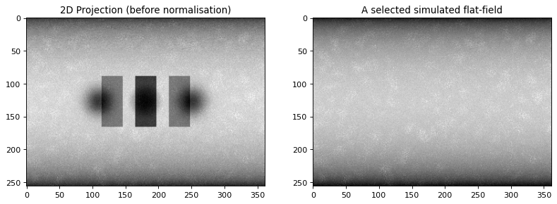

Model 3D and reconstruction#
Using TomoPhantom to:#
build a 3D phantom using the existing model
generate analytical projection data (parallel beam) and add various inaccuracies to simulate more realistic imaging conditions
reconstruct the data using the Fourier method (ToMoBAR package required)
[1]:
import os
import matplotlib.pyplot as plt
import numpy as np
import tomophantom
from tomophantom import TomoP3D
from tomophantom.qualitymetrics import QualityTools
from tomophantom.flatsgen import synth_flats
plt.rcParams['figure.figsize'] = [12, 8]
plt.rcParams['figure.dpi'] = 80
[2]:
print ("Building 3D phantom using TomoPhantom software")
model = 9 # select a model number from the library
N_size = 256 # Define phantom dimensions using a scalar value (cubic phantom)
path = os.path.dirname(tomophantom.__file__)
path_library3D = os.path.join(path, "phantomlib", "Phantom3DLibrary.dat")
#This will generate a N_size x N_size x N_size phantom (3D)
phantom_tm = TomoP3D.Model(model, N_size, path_library3D)
sliceSel = int(0.5*N_size)
plt.gray()
plt.figure()
plt.subplot(131)
plt.imshow(phantom_tm[sliceSel,:,:],vmin=0, vmax=1)
plt.title('3D Phantom, axial view')
plt.subplot(132)
plt.imshow(phantom_tm[:,sliceSel,:],vmin=0, vmax=1)
plt.title('3D Phantom, coronal view')
plt.subplot(133)
plt.imshow(phantom_tm[:,:,sliceSel],vmin=0, vmax=1)
plt.title('3D Phantom, sagittal view')
plt.show()
Building 3D phantom using TomoPhantom software
<Figure size 960x640 with 0 Axes>
[3]:
# 3D parallel beam projection geometry related parameters:
Horiz_det = int(np.sqrt(2)*N_size) # detector column count (horizontal)
Vert_det = N_size # detector row count (vertical) (no reason for it to be > N)
angles_num = int(0.5*np.pi*N_size); # angles number
angles = np.linspace(0.0,179.9,angles_num,dtype='float32') # in degrees
angles_rad = angles*(np.pi/180.0)
#%%
print ("Building 3D analytical projection data with TomoPhantom")
projData3D_analyt= TomoP3D.ModelSino(model, N_size, Horiz_det, Vert_det, angles, path_library3D)
intens_max_clean = np.max(projData3D_analyt)
sliceSel = 150
plt.figure()
plt.subplot(131)
plt.imshow(projData3D_analyt[:,sliceSel,:],vmin=0, vmax=intens_max_clean)
plt.title('2D Projection (analytical)')
plt.subplot(132)
plt.imshow(projData3D_analyt[sliceSel,:,:],vmin=0, vmax=intens_max_clean)
plt.title('Sinogram view')
plt.subplot(133)
plt.imshow(projData3D_analyt[:,:,sliceSel],vmin=0, vmax=intens_max_clean)
plt.title('Tangentogram view')
plt.show()
Building 3D analytical projection data with TomoPhantom
[6]:
print ("Simulate synthetic flat fields, add flat field background to the projections and add noise")
I0 = 15000; # Source intensity
flatsnum = 20 # the number of the flat fields required
[projData3D_noisy, flatsSIM, speckles] = synth_flats(projData3D_analyt,
source_intensity = I0,
detectors_miscallibration=0.02,
arguments_Bessel = (1,10,10,12),
specklesize = 15,
kbar = 0.3,
jitter_projections = 1.0,
sigmasmooth = 3,
flatsnum=flatsnum)
del projData3D_analyt
plt.figure()
plt.subplot(121)
plt.imshow(projData3D_noisy[:,0,:])
plt.title('2D Projection (before normalisation)')
plt.subplot(122)
plt.imshow(flatsSIM[:,0,:])
plt.title('A selected simulated flat-field')
plt.show()
Simulate synthetic flat fields, add flat field background to the projections and add noise

[11]:
print ("Normalise projections using ToMoBAR software")
from tomobar.supp.suppTools import normaliser
# normalise the data, the required format is [detectorsX, Projections, detectorsY]
projData3D_norm = normaliser(projData3D_noisy, flatsSIM, darks=None, log='true', method='mean', axis=1)
#del projData3D_noisy
intens_max = 0.8*np.max(projData3D_norm)
sliceSel = 150
plt.figure()
plt.subplot(131)
plt.imshow(projData3D_norm[:,sliceSel,:],vmin=0, vmax=intens_max)
plt.title('Normalised 2D Projection (erroneous)')
plt.subplot(132)
plt.imshow(projData3D_norm[sliceSel,:,:],vmin=0, vmax=intens_max)
plt.title('Sinogram view')
plt.subplot(133)
plt.imshow(projData3D_norm[:,:,sliceSel],vmin=0, vmax=intens_max)
plt.title('Tangentogram view')
plt.show()
Normalise projections using ToMoBAR software
[14]:
# initialise tomobar DIRECT reconstruction class ONCE
from tomobar.methodsDIR import RecToolsDIR
RectoolsDIR = RecToolsDIR(DetectorsDimH = Horiz_det, # DetectorsDimH # detector dimension (horizontal)
DetectorsDimV = None, # DetectorsDimV # detector dimension (vertical) for 3D case only
CenterRotOffset = None, # Center of Rotation (CoR) scalar (for 3D case only)
AnglesVec = angles_rad, # array of angles in radians
ObjSize = N_size, # a scalar to define reconstructed object dimensions
device_projector = 'cpu')
print ("Reconstruction using FBP from tomobar")
recNumerical= RectoolsDIR.FOURIER(projData3D_norm[sliceSel,:,:], method='linear')
recNumerical *= intens_max_clean
plt.figure()
plt.imshow(recNumerical, vmin=0, vmax=1, cmap="gray")
plt.colorbar(ticks=[0, 0.5, 1], orientation='vertical')
plt.title('Fourier slice reconstruction')
Reconstruction using FBP from tomobar
[14]:
Text(0.5, 1.0, 'Fourier slice reconstruction')